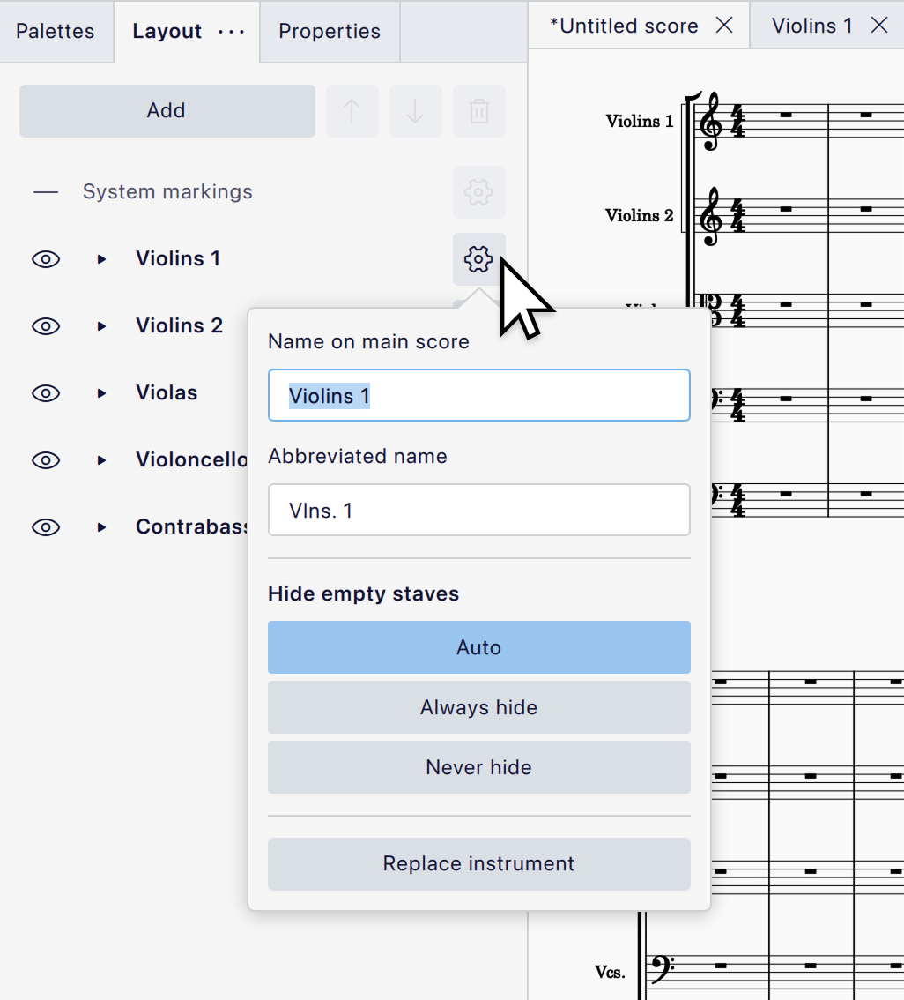
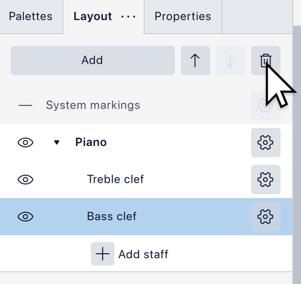

乐器和系统标记
概述
排版 面板（以前称为 乐器）让你无需离开乐谱视图，即可控制乐器、系统标记的位置以及一些基本的谱表属性。乐谱中的所有乐器都会出现在此面板中。
打开面板
单击 排版 选项卡以打开面板：

如果该选项卡不可见，可通过选择 视图 -> 排版 或按 F7 来显示它。
管理乐器
添加乐器
打开 乐器 对话框：
- 单击面板顶部的 添加 按钮。
- 从弹出菜单中选择 添加乐器。
你也可以按 I 打开此对话框。
有关使用该对话框的信息，参见 选择乐器。
删除乐器
选中一件乐器，单击面板顶部的 
重新排列乐器
选中一件乐器，单击面板顶部的
重命名乐器
单击乐器右侧的 

要完全隐藏乐器标签，或控制长、短名称的使用位置，请使用 格式 -> 样式 -> 乐谱 -> 乐器标签 中的设置，而不要在这里删除名称。
更换乐器
要在 排版 面板中更换乐器：
- 单击乐器名称右侧的

- 在出现的弹出菜单中，单击 更换乐器。
- 在出现的对话框中选择你想要的替换乐器。
- 单击 确定。
管理谱表
排版 面板也可用于向现有乐器添加谱表，并配置它们的一些基本属性。
最初，面板只为每件乐器显示一个条目。要显示一件乐器的各条谱表，可单击乐器名称左侧的小黑色三角以展开该乐器。谱表通常根据其默认谱号进行标记（例如，钢琴会有“高音谱号”和“低音谱号”）。
向现有乐器添加谱表
- 单击

- 单击 添加谱表。

新谱表属于同一件乐器，但其记谱与它的其他谱表完全独立。要创建一条与现有谱表记谱保持同步的谱表，请改为添加一条 链接谱表。
向现有乐器添加链接谱表
链接在一起的谱表会保持其记谱同步，因此一条谱表上的任何更改都会反映到其他谱表上。不过，各谱表可以有不同的谱表样式，这使得它非常适合在吉他、班卓琴、尤克里里等乐器上同时创建五线谱记谱和吉他谱记谱。
要创建链接谱表：
- 单击
- 单击谱表名称右侧的
- 单击 创建链接谱表。
- 单击新添加谱表上的齿轮按钮以配置它，例如在需要时更改 谱表类型（见下文 配置谱表）。
删除谱表
- 单击
- 选中你想要删除的谱表。
- 单击面板顶部的


这仅在乐器拥有多条谱表时有效。要删除最后一条谱表，请选中并删除该乐器本身。
重新排列谱表
要更改一件乐器内谱表的顺序，选中一条谱表，单击面板顶部的
配置谱表
你可以通过单击谱表名称右侧的
- 谱表类型 允许你在标准谱表和多种预定义的吉他谱类型之间进行选择。
- 小谱表 使谱表变小（“提示尺寸”）。小谱表的大小可在 样式 -> 大小 中配置。
- 隐藏所有不含记谱的小节（剖面） 会阻止为任何空小节绘制该谱表。详见 剖面谱表。
有关谱表自定义的更多信息，参见 谱表/分谱属性。
管理系统标记
系统标记是诸如速度标记、排练标记、反复跳房子和跳转等适用于乐谱中所有乐器的项目。默认情况下，它们显示在系统的顶部，但在较大的乐谱中通常至少会在更下方重复一次。例如，在管弦乐谱中，常见的做法是在弦乐上方重复它们。
你可以通过 排版 面板控制这些标记出现的位置。每份乐谱在顶部都有一个系统标记的“实例”，它不能被移动或删除，但你可以添加额外的实例并自由定位它们。
在空白乐谱中，这些实例在面板中仅列为“系统标记”，但当你向乐谱添加标记后，它们会更新以列出在该处显示了哪些类型的标记。你可以配置要在每个位置显示哪些类型的项目。
如果你的乐谱使用大拍号（在谱表上方或横跨谱表），这些也会被视为系统标记，并会出现在你创建系统标记实例的任何位置。有关如何选择这些样式的信息，参见 拍号。
如果你想指定小节号在乐谱上出现的具体位置，这些也可以被视为系统标记。详见 小节号位置。
添加系统标记实例
要添加一个新的系统标记实例：
- 打开 排版 面板。
- 选中你希望标记出现在其上方的乐器。
- 单击 添加 按钮。
- 从弹出菜单中选择 系统标记。
如果你没有先选中一件乐器，新实例会出现在乐谱顶部第一个可用的位置。
删除系统标记实例
选中一个系统标记实例，单击面板顶部的
移动系统标记实例
选中一个系统标记实例，将其向上或向下拖动到新位置，或使用面板顶部的
如果你将一个实例移到另一个实例之上，被移动的实例会替换另一个，因为两个实例不能存在于同一位置。
通过将实例拖到最底部乐器的下方，可以在系统底部下方显示系统标记。（如果乐谱只包含一件乐器，则无法这样做。）
配置要显示哪些类型的系统标记
要选择在给定位置显示哪些类型的标记：
- 单击列表中实例右侧的
- 在弹出菜单中，单击
默认情况下，所有类型都会在所有位置显示。
可用的项目类型有：速度、渐快/渐慢速度变化、排练标记、系统文本、系统文本线、反复跳房子、跳转、播放次数文本、小节号和拍号（如果你使用大拍号）。
系统标记与分谱
系统标记无法在分谱中配置。分谱中只有一个实例，显示在顶部，所有类型的标记都可见。你仍然可以按通常方式在分谱中将个别标记设为不可见。
隐藏乐器和谱表
要隐藏或显示一件乐器，单击乐器标签左侧的
要隐藏或显示一条特定谱表：
- 单击
- 单击谱表左侧的
被隐藏的乐器和谱表并未被删除，它们只是在整份乐谱中被隐藏，不会影响其排版。你仍然可以为隐藏的乐器创建分谱。
隐藏的乐器不会播放，但隐藏的谱表会播放。如果你希望隐藏一件乐器但仍能听到它，请执行以下任一操作：
- 在 混音器 中取消静音该乐器。
- 单独隐藏它的所有谱表，但不要隐藏乐器本身。
通过 偏好设置 -> 音频与 MIDI -> 通过在排版面板中显示/隐藏乐器来切换音轨静音，可以控制隐藏乐器时是否自动将其静音。
如果你只希望在没有音乐时隐藏某个系统上的乐器或谱表，参见 仅在需要时显示谱表。